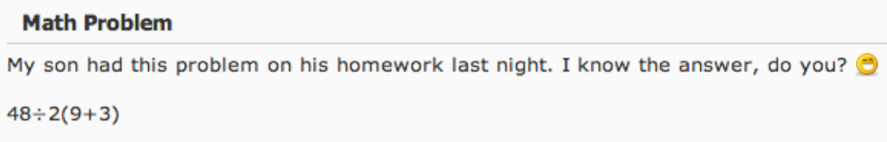

2.2 Using Algebraic Expressions
Introduction
According to the website Know Your Meme, one of the oldest math-related memes got its start on April 7, 2011 when a parent posted the following question from their son's homework to a local message board.
The answers were split, with nearly half saying \(48\div 2(9+3)=2\) and the other half thinking \(48 \div 2(9+3)=288\). Who was right? And how can we avoid this type of confusion ourselves? That's one of the major things we'll examine in this section.
Applying the Order of Operations
As we saw in the previous section, to evaluate an expression means to determine its value when specific values have been used for each variable.
Evaluate the expression \(x-y\) for the values \(x=2\) and \(y=-3.\)
Solution
\begin{align} x-y & = 2 -(-3) && \hint{\text{Substitute the values.}} \\ &= 2 + 3 && \hint{\text{Using the rule for subtracting negative integers.}} \\ &= 5 && \hint{\text{Simplify.}} \\ \end{align}
We had to be a little bit careful in this example because it involved subtracting a negative integer, but there was only one operation (the subtraction) taking place.
Often expressions will involve multiple operations. Take, for instance, the expression \(5x-3\). It involves two operations: a multiplication and a subtraction. Which one do we do first?
Fortunately, mathematicians have agreed on a set of rules that tell us which to do first. These rules are called the standard order of operations.
- Perform any operations within groupings. Groupings are typically shown within parentheses or brackets. Less commonly, groupings will involve an operation in an exponent or in the numerator (top) or denominator (bottom) of a fraction.
- Apply any exponents.
- Apply any multiplication or division operations from left to right.
- Apply any addition or subtraction operations from left to right.
To remember the order of operations, people around the world use several different acronyms, such as PEMDAS, BODMAS, and GEMS. For our purposes, we'll be using the GEMDAS acronym.
- G stands for Groupings: Perform calculations inside grouping symbols first.
- E stands for Exponents: Calculate any exponents or powers next.
- MD stands for Multiplication and Division: Do multiplication and division from left to right since they have the same priority.
- AS stands for Addition and Subtraction: Finally, perform addition and subtraction from left to right since they have the same priority.
If an expression has more than one operation with equal priority (like multiplication/division or addition/subtraction) then you work with them from left to right.
Use the order of operations to evaluate
\[20 - 8 \div 2 \times 3 + 5\]Solution
\begin{align} 20 - 8 \div 2 \times 3 + 5 &= 20 - 4 \times 3 + 5 && \hint{\text{First, divide: } 8 \div 2 = 4} \\ &= 20 - 12 + 5 && \hint{\text{Then, multiply: } 4 \times 3 = 12} \\ &= 8 + 5 && \hint{\text{After that, subtract: } 20 - 12 = 8} \\ &= 13 && \hint{\text{Finally, add: } 8 + 5 = 13} \end{align}
We are now ready to see which answer to the meme is correct.
Use the order of operations to evaluate
\[48\div 2(9+3)\]Solution
\begin{align} 48 \div 2(9+3) &= 48 \div 2 \times 12 && \hint{\text{First, add: } 9 + 3 = 12} \\ &= 24 \times 12 && \hint{\text{Then, divide: } 48 \div 2 = 24} \\ &= 288 && \hint{\text{Finally, multiply: } 24 \times 12 = 288} \end{align}
Notice that we started with what was inside the parenthesis since those are a grouping symbol. That left us with a division and a multiplication. Since those are operations with the same level of importance, we evaluated them from left to right: dividing next and lastly multiplying.
More importantly, the confusion could have been avoided entirely by using proper grouping symbols. It should have been written as \(\dfrac{48}{2}(9+3)\) if they wanted the answer to be \(288\) or as \(\dfrac{48}{2(9+3)}\) if they wanted an answer of \(2\). In algebra and beyond, it is very rare to see the \(\div\) symbol used which prevents this type of ambiguity.
Evaluating Algebraic Expressions with the Order of Operations
When substituting values into an exprssion with variables, it is helpful to place parenthesis around any inserted values. Doing so will help maintain the order of operations in the expression, as we'll see in the next two examples.
Carefully evaluate \(7(2-x)\) for \(x=-5\).
Solution
\begin{align} 7(2-x) &= 7(2-(-5)) && \hint{\text{Substitute } -5 \text{ for } x} \\ &= 7(7) && \hint{\text{Subtract } 2-(-5)=7} \\ &= 49 && \hint{\text{Simplify.}} \end{align}
Here \(2-(-5)\) was grouped together with the parentheses, so we evaluated that subtraction first before multiplying by \(7\).
Carefully evaluate \(4-5x^2\) for \(x=-3\).
Solution
\begin{align} 4-5x^2 &= 4-5(-3)^2 && \hint{\text{Substitute } -3 \text{ for } x} \\ &= 4-5 \cdot 9 && \hint{\text{Evaluate the exponent first} (-3)^2=9} \\ &= 4-45 && \hint{\text{Multiply next.}} \\ &= -41 && \hint{\text{Subtract.}} \end{align}
In this last example there were no groupings so we evaluated the exponent first.
Creating and Using Algebraic Expressions
We are now ready to create expressions to match real-life situations. While there's no set process for this, if we can recognize which operations match the language used and choose our variables appropriately, we should be fine. To help, here are some common phrases that often indicate specific operations, with examples of how they translate to expressions:
- sum: The sum of two exam scores: \(e_1+e_2\)
- total: The total cost of a shirt and pants: \(s + p\)
- combined: The combined number of apples and bananas: \(a + b\)
- decreased by: The price decreased by 3 dollars: \(p-3\)
- fewer than: The team scored 10 fewer points: \(s - 10\)
- difference: The difference between the high and low temperatures: \(H - L\)
- product: The product of length, width, and height: \(l \cdot w \cdot h\)
- each: Each movie ticket costs 12 dolars: \(12t\)
- of: A used car is 2/3 the price of a new one: \(\dfrac{2}{3}c\)
- per: A mechanic charges 80 dollars per hour: \(80h\)
- ratio: The ratio of wins to losses: \(\dfrac{w}{l}\)
- divided by: Distance divided by time: \(\dfrac{D}{T}\)
- quotient: The quotient of cookies and people: \(\dfrac{c}{p}\)
- split evenly: The cost of dinner is split evenly among a number of friends: \(\dfrac{c}{n}\)
Often situations will involve more than one operations and you will have to be careful to place them in the proper order when creating a representative expression.
The cost to hire a plumber involves a \(\$65\) call-out fee on top of a labor charge of \(\$85\) per hour. Write an expression that would give the total cost to hire a repair technician for \(x\) hours. Use your expression to calculate the cost for the technician for \(5\) hours.
SolutionThe \(\$85\) rate per hour should multiply the number of hours worked. The \(\$65\) call-out fee is then added to that total. So the cost of hiring this plumber for \(x\) hours could be calculated with the expression: \(85x+65.\)
The total cost for 5 hours would be
\[85 \cdot (5)+65 = 425+65 = $490\]Expressions can also be written when there are several different quantities that need to be represented by variables.
A store earns \(\$25\) for every shirt sold, \(\$40\) for every pair of jeans and \(\$10\) for belts. Write an expression for the total amout of money earned based on the number of shirts, jeans and belts that were sold.
Solution
We need to multiply the number of items sold by their individual prices and then add the results. This gives us an expression of
\[25s+40j+10b\]if we use \(s\), \(j\) and \(b\) for the number of shirts, jeans and belts sold.
In our final example we will see two different, but equivalent, expressions that both represent the same thing.
An employee earns \(\$18\) per hour. They get paid every two weeks and worked \(27\) hours last week. Write an expression for what their total pay will be if they work \(x\) hours this week. Use your expression to calculate the employee's pay if they work \(30\) hours this week.
Solution
There are two different ways to think about this. We could either calculate their pay each week and add the results, or we could total up their hours for both weeks and then calculate the pay. The first method gives the expression
\[18 \cdot 27+18x\]while the other is
\[18(27+x)\] Both expressions are equivalent so we can use either one to calculate their total pay if they work another \(30\) hours. With the first expresson we get \[18 \cdot 27+18 \cdot 30=486 + 540=$1026\]and with the second one the result is
\[18(27+30)=18(57)=1026\]In either case, the employee would earn \(\$1026\).
Looking Ahead
Thinking about our previous example, it is easy to see where the need to solve an equation comes from. If the employee wanted to earn a certain amount they would have to figure out what to plug in for \(x\) to have this expression equal that amount. In the following chapter we'll go through methods for finding answers to questions like that.
But first we'll need to learn and practice more techniques for working with and simplifying expressions, and that's what the next few sections are for.